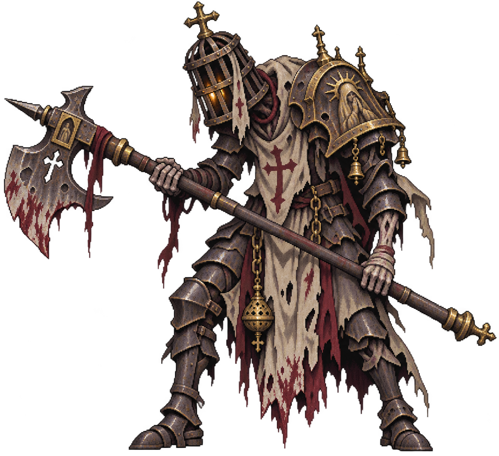

ASHES
Expedição
ATO I · O MOSTEIRO SEM SOLPREPARAÇÃO
ALÉM DO PORTÃO
O silêncio aguarda.
Prepare seu juramento para entrar no mosteiro.
GUARDIÃO—
VS

Básicos priorizam invocações · habilidades atingem o elite · ataques de área também ferem minions
Escolha sua primeira habilidade.